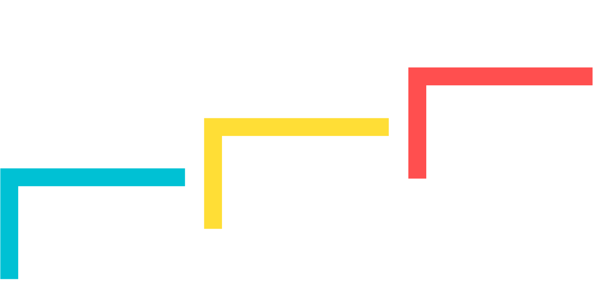

Causal Inference
Introduction
Why causality?
Data science has gained extreme popularity in the last years and particularly in the field of machine learning, a large number of new methods and algorithms has been developed. Many of the methods are built to perform well at prediction tasks like predicting whether a customer is likely to churn, natural language processing (extracting sentiments, translating etc.), guiding self-driving cars, recognizing objects and many other applications. Those algorithms belong to the category of supervised learning and are highly data-driven (on historical data) and optimized to predict as accurate as possible. Due to increased computing power, these models have proven to be very successful in many contexts.
However, there are many other contexts, where prediction is not the main focus but instead making sense of the data, understanding mechanism and processes or guiding decisions and policies plays the most important role. For example, you are not only interested in whether a customer is likely to churn, but you want to know why he/she is likely to churn. Then, we find ourselves in the realm of causality. Here, many of the newer methods are likely to fail due to their prediction-centric structure
Instead of throwing a lot of data to a black box searching for patterns between independent variables and outcome to get a model that predicts very well, in this course, we will try to understand characteristics of the data-generating process, i.e. the system of cause and effect and extract useful information from the data. That is what science is about, explaining why things are happening.
!!! Illustration Prediction vs Explanation
Illustrative Examples
A simple application, where a data-driven machine learning model would fail to improve our understanding is a naive examination of relationship between hotel room prices and hotel room bookings. Imagine, having a sample of historical data about prices and number of bookings at your hand and you would train/fit a model to that data. A prediction-focused model would now look for correlations and patterns in the data and would conclude that in times of high prices there were more bookings.
But what can we derive from such a model? That higher prices lead to higher bookings? This is most certainly not a correct causal relationship. Because we know that is not true and it is actually the other way around. People are more likely to book when prices are low. There are other factors playing a role like for example tourist seasons, particular events or economic factors. Only if we take these other factors into account, we will be able to obtain a valid estimate of the causal effect. And being able to understand the underlying mechanism will help us in taking the right actions and decisions.
Another example is the direction of causation. In models based solely on correlations, we can’t be sure in which direction the causation works. A classic example is the strong correlation between roosters crowing and the sun rising. Without knowing anything about how the world works, we could come to the conclusion that the rooster causes the sun to rise. Obviously, this is wrong.
Based on these small examples, you should already understand the risk of relying on purely data-driven approaches. In domains, particularly in complex domains that demand a lot of theoretical consideration, data-driven approaches are not sufficient to help us in understanding and guiding our decisions. In business, management and economics, which we put our focus on, wrong conclusions might come with costly consequences. We will therefore explore how putting emphasis on causality is beneficial to business analytics and how we can move from correlation to causation.
Definition
So let’s move a step back and think about what causality actually means before we find out how to estimate causal effects.
Hume (1993) defined a causal effect as:
“…if the first object had not been, the second never had existed.”
Mille (2010) approaches it with an example:
“If a person eats of a particular dish, and dies in consequence, that is, would not have died if he had not eaten it, people would be apt to say that eating of that dish was the source of his death.”
Both quotes show that for an action to be the cause of an outcome, the outcome needs to have happened only when there was the cause.
But how do you ensure that this is what happened in a study or analysis task? Unfortunately, data alone is never sufficient to make causal claims. In addition, you need to have some kind of domain knowledge to make necessary (and often non-testable) assumptions. Thus, causality goes beyond statistical modeling. Using the example from above, the actual problem is not “Are sales high when the price is high?” but rather “What happens to our sales if we decrease/increase the price?”.
Other questions that arise in businesses could be:
Does the advertising campaign increase sales?
Does a customer loyalty program reduce customer churn?
Do job benefits increase the attractiveness of a company for employees?
Differences in concepts and questions that can be answered are shown by Pearl in his ladder of causation.

The first rung deals with associations based only on observations. Most machine learning models are at the first rung, only observing patterns and predicting the future based on the past.
The second rung also performs exogenous (random or as-if-random) interventions in a system. It actually “does” something by changing the potential cause in e.g. an experiment. It is very important to understand the difference between “seeing” (rung 1) and “doing” (rung 2) to distinguish causation from correlation.
On the third rung, the highest level of causality, we are imagining what would have happened, thus we are in a hypothetical world. It considers an alternate state of a past event.
What is important to do when dealing with causal inference, is to understand what cause and effect really means. \(X\) causes \(Y\), if we change \(X\) but nothing else and therefore \(Y\) changes. You could also imagining it as \(Y\) “listening” to \(X\) and adapting. A causal effect is temporarily bound, which means that the change of \(X\) has to happen before \(Y\). But note, only because \(X\) happens before \(Y\) does not necessarily prove a causal effect.
In summary, to define a causal effect, we need:
Temporal sequence: For \(X\) to cause \(Y\), \(X\) has to happen before \(Y\).
Non-spurious association: \(X\) and \(Y\) did not just happen by chance alone and there is no other factor that accounts for the association between \(X\) and \(Y\).
Concomitant variation: Only if \(X\) has happened, it can cause \(Y\). Otherwise, it is no causal effect.
There is also a difference between probabilistic and deterministic causation. Considering deterministic causation, \(X\) causes \(Y\) every time and there are no exemptions. However, when we talk about probabilistic causation, we don’t mean that \(X\) definitely causes \(Y\) but rather increases the likelihood of \(Y\) happening. E.g. a drug generally increases the likelihood of fighting a specific disease but will not work in 100% of the cases. So in almost all applications in business, social sciences, economics and many other domains, causal inference usually deals with probabilistic causation. Also in this course, we will focus only on probabilistic causation.
Notation and terminology
Now, we will go through an example to introduce the notation and terminology. Both is crucial to understand issues of causality and find solutions to causal problems.
Imagine you are a business owner of four stores and you want to investigate if there is a benefit of having own parking spots in front of your store. And if there is a benefit, you would also like to know what size it has.
At stores \(A\) and \(B\), which are located in the city center, you don’t have any parking spots but at stores \(C\) and \(D\) located outside the city you do. Except for location and parking spots, the stores are very similar, i.e. they sell exactly the same goods, have the same size etc. So our research question is:
How do sales increase/decrease, when a store is equipped with parking spots?
In causal inference, we are always interested in analyzing the effect of a specific variable on the outcome variable. This specific variable is called treatment variable and to understand the effect of this treatment variable, it needs to vary across observations units. Otherwise, if the treatment variable was constant across all observation units, we could not see how changing it translates to a change in the outcome. Manipulating the treatment variable is called treatment or intervention. It might remind you of a clinical setting, but in causal inference the term has a very general meaning and a treatment can be a lot of things.
Applied to our example:
Observation unit: stores
Treatment variable: parking spots
Outcome variable: sales
For each store \(i\), we denote whether it has parking spots with \(D_i\), the treatment assignment:
\[ D_i=\begin{cases}1 \ \text{if unit i received treatment}\\0 \ \text{otherwise}\\\end{cases} \]
Here, we focus on a binary variable, but treatment could also be assigned for different levels or sizes (imagine a dose of medicine for example). But here, we just say the variable takes on a value of 1 if a unit receives the treatment and 0 if it does not. A store with \(D_i = 1\) has parking spots while a store with \(D_i=0\) has no parking spots.
Fundamental Problem of Causal Inference
Now, let’s think again about the research question. How can we find out what the benefit of having parking spots is? Ideally, we would be able to compute the individual treatment effect (ITE) of each store \(i\). That means, for each store, we would know what the sales would be with and without parking spots. Then we could take the difference of those two outcomes and we would know what part of the sales would be only attributable to having parking spots. This is called the individual treatment effect (ITE):
\[ \text{ITE}_i = Y_{i1} - Y_{i0} \]
\(Y_{i1}\) are sales when there are parking spots at store \(i\) and \(Y_{i0}\) are sales when there are no parking spots at store \(i\). However, observing both outcomes is impossible.
To compute the individual treatment effect we would have to know the amount of sales that would have happened in case the treatment was not assigned to e.g. store \(A\). Not being able to observe an observation unit in both states (= with and without treatment) is called the fundamental problem of causal inference, essentially a missing data problem.
This is why technically the outcomes \(Y_{i1}\) and \(Y_{i0}\) are potential outcomes. To come from potential outcomes to the observed outcome, we can use the switching equation. For example for store \(A\):
\[ \begin{align} Y_A &= D_AY_{A1} + (1-D_A)Y_{A0} \\ &= 0*Y_{A1} + 1*Y_{A0} \\ &= Y_{A0} \end{align} \]
We are able to observe \(Y_{A0}\), the sales for store \(A\) having no parking spots, but we are not able to observe \(Y_{A1}\), the state in which store \(A\) would have parking spots. But to estimate a individual causal effect, we would have to know what happens when we intervene and when we don’t intervene.
!!! VIZ: Potential outcomes
\(Y_{A1}\) and \(Y_{A0}\) are potential outcomes, of which the one actually happened is called factual and the one that did not happen is called counterfactual. Note, that they describe outcomes for the same unit and although we cannot observe one of them, we can still define it mathematically.
Average Treatment Effect
For now, we will leave the ITE behind and focus on a metric that is more accessible in analyses, the average treatment effect (ATE). The average treatment effect is defined as
\[ \text{ATE} = E[Y_1 - Y_0] \,\,, \]
the expected difference in outcomes under both states. So the causal effect is defined as a comparison between two states of the world, the “actual” or “factual” state compared to the never observed “counterfactual” world.
Other forms of average treatment effects are the average treatment effect on the treated (ATT) and the average effect on the untreated (ATU).
\[ \begin{align} ATT = E[Y_1 - Y_0|D = 1] \\ ATU = E[Y_1 - Y_0|D = 0] \end{align} \]
Now let’s ignore the fundamental problem of causal inference for a minute and imagine the impossible scenario that we would be able to observe all outcomes for all stores for all different states. That means, we would be able to magically know the sales of each stores with and without parking spots. Just for illustration, the unobserved outcomes are crossed out, but we’ll still use them for computation.
| \(i\) | \(Y_{i0}\) | \(Y_{i1}\) | \(D_i\) | \(Y_i\) | \(\text{ITE}\) |
|---|---|---|---|---|---|
| \(A\) | 135 | 0 | 135 | +10 | |
| \(B\) | 121 | 0 | 121 | +4 | |
| \(C\) | 102 | 1 | 102 | +28 | |
| \(D\) | 94 | 1 | 94 | +26 |
Knowing all states, we would be able to easily compute the average treatment effect by averaging the last column \(\Delta y\),
\[ \text{ATE} = \frac{1}{4}(28 + 26 + 10 + 4)= 17 \]
We can already see that for the treated stores, the ones with parking spots, the treatment effect is way higher. We can show that by calculating the average treatment effect for the treated (\(D_i = 1\)) and for the untreated (\(D_i=0\)).
\[ ATT = \frac{1}{2}(28+26) = 27 \\ ATU = \frac{1}{2}(10+4) = 7 \]
But again, we cannot see the table as it is shown above but instead, what we would see is the following table.
| Store | \(y_0\) | \(y_1\) | \(d\) | \(y\) | \(\text{ITE}\) |
|---|---|---|---|---|---|
| \(A\) | 135 | - | 0 | 135 | - |
| \(B\) | 121 | - | 0 | 121 | - |
| \(C\) | - | 102 | 1 | 102 | - |
| \(D\) | - | 94 | 1 | 94 | - |
One idea you could come up with is to compare the mean of treated units to the mean of untreated units and take the difference as the ATE. Treated units are called the treatment group while untreated units are called control group. Knowing the true average treatment effect from our hypothetical table above, let’s see how it works.
\[ \text{ATE} = E[Y|D=1] -E[Y|D=0] = \frac{102+94}{2} - \frac{135+121}{2} = -30 \]
This would leave us with an average treatment effect of \(-30\), which is is very far away from our true estimate of \(+27\). In fact, it even goes in the other direction. This is why we need to be extremely careful when attempting to prove causal effects. Naive estimations and simple methods might not only under- or overestimate the effect or not identify a true effect, but they could get it even completely wrong.
Bias
But what is the reason for this difference and reversing of signs? When we think again about the problem description, there was one more detail we haven’t really cared about so far. It was said that two of the stores are located in the city center and two stores are located outside the city center. What difference could that make for the potential outcomes and the individual treatment effect?
If we think about it, stores outside the city are more dependent on having parking spots as there are no people just walking by and entering spontaneously. In the city, there are people on their shopping trip walking and not by car, so there is no need for a parking sport. Customers visiting stores outside the city center are more likely to have planned their trip and come by car. Also, stores in the city center are more likely to have more customers and therefore more sales.
So there is another factor, namely the location, that plays an important role that we did not include in our analysis which biases our estimate. Such variables are called confounders and in many scenarios, they are completely unobserved. In this case, treated and untreated stores are not comparable. In potential outcomes notation, we can say that \(Y_0\) is different for treated and untreated stores due to their different location causing a different level of sales in the untreated status.
This means, that the negative association between parking and sales that we observe does not translate into causation. Mathematically, we can prove that our naive estimate of the ATE can be biased when \(Y_0\) differs for both treated and untreated group as we just reasoned. Note that \(E[Y_1 - Y_0]\) is the causal average treatment effect.
\[ \begin{align} E[Y_1 - Y_0] &= E[Y|D=1] - E[Y|D=0] \\ &= E[Y_1|D=1] - E[Y_0|D=0] + E[Y_0|D=1] - E[Y_0|D=1] \\ &= \underbrace{E[Y_1 - Y_0|D=1]}_{ATT} + \underbrace{\{ E[Y_0|D=1] - E[Y_0|D=0] \}}_{BIAS} \end{align} \]
The formula shows where the bias comes from: the difference in outcomes for both groups had they not been treated. Mathematically, it looks simple to arrive at an unbiased estimate, we just have to make sure the last part of the formula equals zero: \(E[Y_0|D=0] = E[Y_0|D=0]\)
But how do we achieve it in practice? How can we go from association to causation by eliminating the bias? We need treatment and control group to be comparable before treatment. This also implies that the ATT is equal to the ATE and the difference in means is equal to the causal effect we want to estimate.
Outlook
The most obvious way to achieve similarity between treatment and control group is randomization. Each observation unit needs to be randomly assigned to either control or treatment group, i.e. in our example, we would have to physically randomize whether a store has parking spots or if it has not. The current allocation of parking spots is not random, as the stores outside the city are more likely to have parking spots. There are also other methods that do not require physical randomization which we will get to learn in the following chapters.
But what you should take from this chapter is the problem of confusing statistical estimates with causal estimates. Understanding this problem is essential for understanding the need to find tools and instruments to make treatment and control groups comparable and eliminate biases.
There are very few scenarios where we can actually be confident not to take measures against biases but in most cases, especially when dealing with observational data, biases will arise. In business and management science, economic actors almost always attempt to achieve some optima, which is ultimately based on their potential outcomes and thus rendering simple comparisons improper.